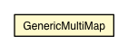

jsl.utilities.misc
Class GenericMultiMap

java.lang.Object
 java.util.AbstractMap
jsl.utilities.misc.GenericMultiMap
java.util.AbstractMap
jsl.utilities.misc.GenericMultiMap
- All Implemented Interfaces:
- Map
public class GenericMultiMap
- extends AbstractMap
map
private Map map
GenericMultiMap
public GenericMultiMap()
GenericMultiMap
public GenericMultiMap(Map copy)
containsKey
public boolean containsKey(Object key)
- Specified by:
containsKey in interface Map- Overrides:
containsKey in class AbstractMap
containsValue
public boolean containsValue(Object value)
- Specified by:
containsValue in interface Map- Overrides:
containsValue in class AbstractMap
get
public Object get(Object key)
- Specified by:
get in interface Map- Overrides:
get in class AbstractMap
put
public Object put(Object key,
Object value)
- Specified by:
put in interface Map- Overrides:
put in class AbstractMap
add
public boolean add(Object key,
Object value)
addAll
public boolean addAll(Object key,
Collection values)
getValues
private Collection getValues(Object key)
remove
public Object remove(Object key)
- Specified by:
remove in interface Map- Overrides:
remove in class AbstractMap
remove
public boolean remove(Object key,
Object value)
clear
public void clear()
- Specified by:
clear in interface Map- Overrides:
clear in class AbstractMap
toString
public String toString()
- Overrides:
toString in class AbstractMap
entrySet
public Set entrySet()
- Specified by:
entrySet in interface Map- Specified by:
entrySet in class AbstractMap
Copyright © 2012 Manuel D. Rossetti. All Rights Reserved.